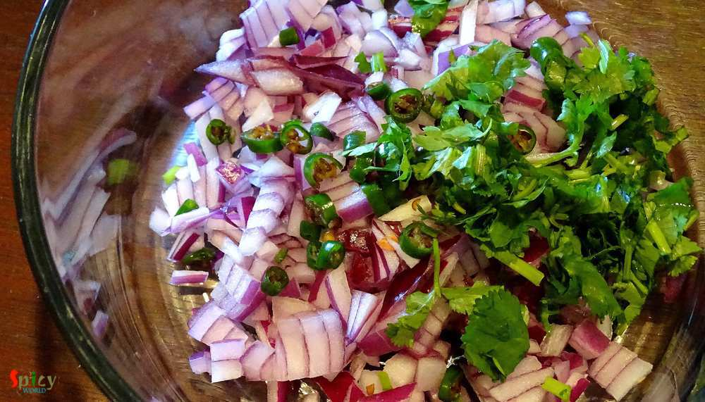
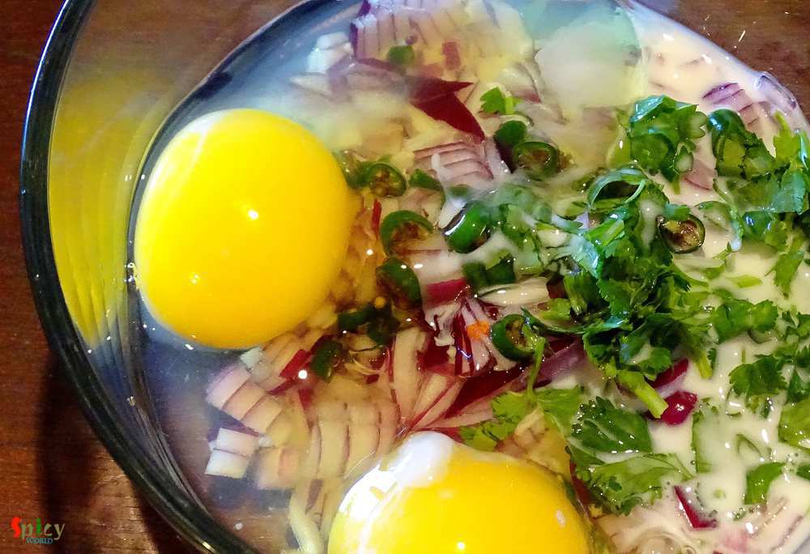
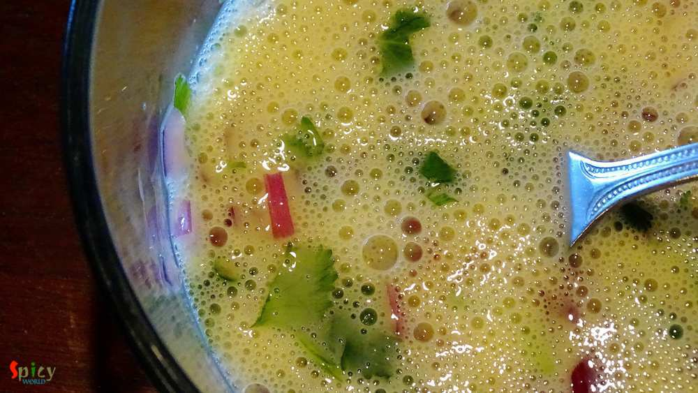
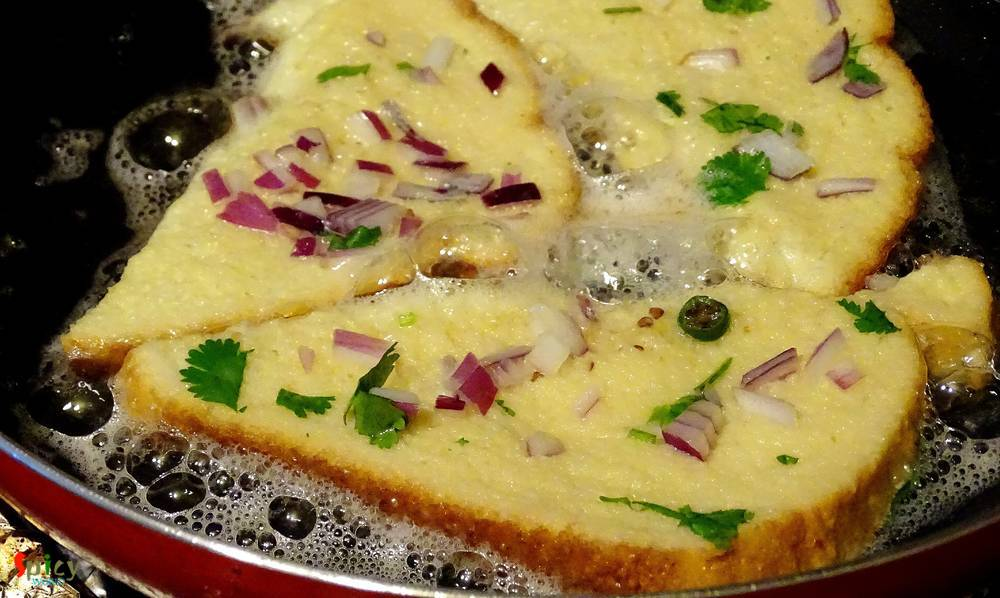

Simple and Easy Recipes
Savory French Toast / Dim Pauruti
© 2016 Spicy World, Published on: May 20, 2016
Every place in this world has their own tea stalls and also some unique dishes. You can never match the taste of tea stall's food with big restaurant's food ... a huge difference ! One of the famous item of those stalls in India is 'toast'. You can get so many types of toast from them like 'butter toast', 'french toast', 'plain toast' etc. I love to eat 'dim pauruti' or in fancy words 'savory french toast' as snack with some ketchup. I used to take these toasts in my lunch box also. They are delicious and very easy to make. Try this in your kitchen and enjoy.

Ingredients
- 8 slices of white breads.
- 3 eggs.
- 1/4 th cup of milk.
- Salt.
- 3 Tablespoons of chopped onion.
- 2 Teaspoons of chopped green chilies.
- 2 Tablespoons of chopped coriander leaves.
- Half cup of oil.


Steps
Put chopped onion, green chilies and coriander leaves in a mixing bowl.
Then put eggs, milk and salt into the bowl.
Mix everything with a fork very well.
Cut the bread slices into halves.
Now heat half of the oil in a flat pan.
Dip bread slices into the egg mixture and place in the hot oil.
Fry each side for 2 - 3 minutes and then serve immediately.
Your savory french toast is ready ...
Serve them hot with some ketchup or black tea ...
")